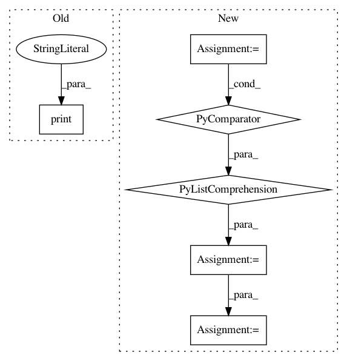

bd5dc215e1c21bf12e6b5297d10f293c45e16c77,examples/run_classification_criteo.py,,,#,5
Before Change
history = model.fit(model_input, data[target].values,
batch_size=256, epochs=10, verbose=2, validation_split=0.2, )
print("demo done")
After Change
train, test = train_test_split(data, test_size=0.2)
train_model_input = [train[feat].values for feat in sparse_feature_dict] + \
[train[feat].values for feat in dense_feature_list]
test_model_input = [test[feat].values for feat in sparse_feature_dict] + \
[test[feat].values for feat in dense_feature_list]
// 4.Define Model,train,predict and evaluate
model = DeepFM({"sparse": sparse_feature_dict,
"dense": dense_feature_list}, final_activation="sigmoid")
model.compile("adam", "binary_crossentropy",
metrics=["binary_crossentropy"], )
history = model.fit(train_model_input, train[target].values,
batch_size=256, epochs=10, verbose=2, validation_split=0.2, )
pred_ans = model.predict(test_model_input, batch_size=256)
print("test LogLoss", round(log_loss(test[target].values, pred_ans), 4))
print("test AUC", round(roc_auc_score(test[target].values, pred_ans), 4))
In pattern: SUPERPATTERN
Frequency: 3
Non-data size: 6
Instances
Project Name: shenweichen/DeepCTR
Commit Name: bd5dc215e1c21bf12e6b5297d10f293c45e16c77
Time: 2019-01-02
Author: wcshen1994@163.com
File Name: examples/run_classification_criteo.py
Class Name:
Method Name:
Project Name: NifTK/NiftyNet
Commit Name: c8b28432a637a780eed96547260722ff3dede57e
Time: 2017-10-04
Author: wenqi.li@ucl.ac.uk
File Name: niftynet/engine/sampler_selective.py
Class Name:
Method Name: rand_choice_coordinates
Project Name: shenweichen/DeepCTR
Commit Name: bd5dc215e1c21bf12e6b5297d10f293c45e16c77
Time: 2019-01-02
Author: wcshen1994@163.com
File Name: examples/run_regression_movielens.py
Class Name:
Method Name: